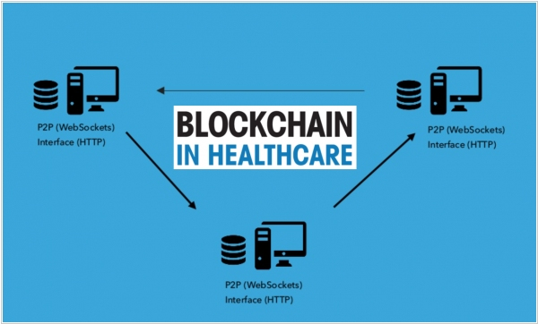

Блокчейн в здравоохранении
Блокчейн в здравоохраненииБлокчейн-технологии играют важную роль в здравоохранении, обеспечивая надежное хранение и защиту данных пациентов. Технология помогает улучшить доступ к медицинской информации, повысить безопасность лекарств и автоматизировать процессы в медицинских учреждениях. Хранение и защита данных пациентов с помощью блокчейнаБлокчейн предоставляет безопасный и защищенный способ хранения медицинских данных пациентов. Данные могут храниться в распределённом реестре, что обеспечивает защиту от несанкционированного доступа и потери информации. Каждый доступ к данным регистрируется, что позволяет отслеживать и контролировать, кто и когда имел доступ к информации. Платформы для отслеживания лекарств и медицинских исследованийС помощью блокчейна можно отслеживать путь лекарств от производителя до конечного потребителя. Это обеспечивает прозрачность и безопасность поставок, позволяя идентифицировать и устранять подделки на рынке. Блокчейн также может использоваться для отслеживания данных медицинских исследований и клинических испытаний. Преимущества для борьбы с подделками лекарствИспользование блокчейна позволяет значительно уменьшить количество подделок лекарств. Каждый продукт может быть идентифицирован с помощью уникального хэша, который фиксируется в блокчейне. Это позволяет пользователям и медицинским работникам проверять подлинность лекарств и предотвращать распространение фальсифицированной продукции. Улучшение медицинских записей и доступа к даннымБлокчейн упрощает доступ к медицинским записям, позволяя врачам и пациентам быстро получать необходимую информацию. Система может обеспечить единый доступ ко всем медицинским данным пациента, что улучшает качество лечения и взаимодействия между медицинскими работниками. Примеры проектов: MedRec, PatientoryПроекты, такие как MedRec и Patientory, активно используют блокчейн в здравоохранении. MedRec разрабатывает децентрализованную систему для управления медицинскими записями, а Patientory предоставляет платформу для хранения и обмена медицинскими данными с использованием технологии блокчейн. |
 |